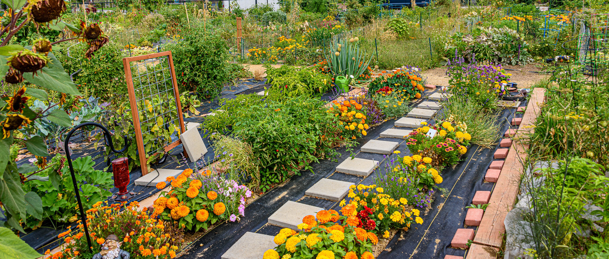

Urban Gardening
uploaded on 12/4/2024
by Rosca Alexandru-David
Gardening in Small Spaces
Urban gardening offers solutions for individuals living in apartments, condos, or homes with limited outdoor space. Here are some tips for gardening in small spaces:
Container Gardening
Use containers such as pots, planters, and hanging baskets to grow plants on balconies, patios, or windowsills.

Vertical Gardening
Before you get started, make sure you have the right supplies for the job! You’ll find most of these items around your house already:

Community Gardens
Join or start a community garden in your neighborhood where you can share gardening space, resources, and knowledge with other urban gardeners.

Microgreens and Sprouts
Grow nutritious microgreens and sprouts indoors on kitchen counters or shelves using trays, containers, or specialized growing kits.
Back